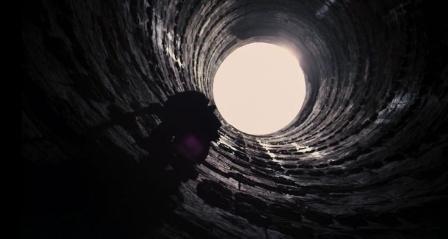

Wayne Records Archive
Episode 1. Dawn of Cawl
Classification: CONFIDENTIAL / Author: B. Wayne
꿈에서 그들은 나를 빛으로 이끌었다. 아름다운 거짓말이었다.

작은 박쥐류는 어두운 동굴에서 살기 때문에 시력이 퇴화되어 초음파를 내지르고, 이를 이용한 반향정위를 통해 먹이의 위치 및 장애물 탐지를 이루어낸다. 자신이 내지른 초음파를 자신이 들어야 하기 때문에 청력이 극도로 발달해 있는데, 초음파를 내지를 때는 고막으로의 진동 전달을 차단해 청력을 보호한다.
어린 시절부터 나는 유난히 청각이 예민했다. 어쩌면 그조차도 부모님이 돌아가신 그날부터 비롯된 것일지도 모르겠다. 태어나서 처음 들어본 총소리가 부모님의 숨이 멎는 바이탈 신호일 것이라고 누가 상상이나 할 수 있을까. 마흔이 넘은 지금도 나는 종종 그 총소리에 잠에서 깨곤 한다. 물론 악몽이다. 식은 땀이 흐른 침대보와 베개를 세탁하다 보면 아침이 다 간다. 전날 마신 와인병을 집 밖에 또 하나 내놓는다. 당신들에게 전하는 아침 인사와 잘 잤다는 말의 8할은 거짓말이다. 난 여전히 악몽을 꾼다.
PTSD: 외상 후 스트레스 장애
“정신적 고통 역시 신체적 외상으로 인한 고통만큼이나 괴롭습니다. 머릿속에만있다고 해서 뭐가 다른가요?” - 미국 코미디언, 트레이시 모건(1968~)
조커가 아캄 수용소를 점거하고 자신의 놀이공원으로 삼았던 약 20년 전의 일이다. 수용소 내부를 돌아다니던 나는 갑자기 앞이 흐릿해지는 경험을 겪었다. 선명하던 병동 내부가 흔들리기 시작하더니, 코너 하나를 돌자 어린시절 부모님을 잃은 크라임 앨리의 골목으로 걸어가고 있었다. 모든 감각이 너무나도 선명한 환영이었다. 아버지의 이름을 외치며 절규하는 어머니와, 총에 맞은 어머니의 육신 위로 분수처럼 흩어지는 진주 목걸이 구슬들... 아무것도 할 수 없었던 어린 시절의 나. 사건현장을 조사하던 경관의 조소 섞인 목소리.
“저 아이는 부모를 잃고도 집사가 있어. 집사가.”
출생을 저주한 건 내 인생에서 아마도 그때가 처음이었을 것이다. 고담은 그런 곳이었다. 명망이 높아도 가혹함은 공평했다.
불면증
깊은 잠에 빠지면 필히 과거 어느 한 시점의 꿈을 꾼다. 같은 꿈을 여러 날 동안 꾸기도 하고, 서로 다른 시점의 꿈을 매일 꾼 적도 있다. 대개는 나를 옥죈 순간들이 나타난다. 배트맨으로 살면서 만난 빌런들과의 싸움 한복판에 있기도 한다. 혹은 유년 시절 부모 없는 나를 욕보인 아이의 옆에 나타나기도 한다. 물론 가장 많은 비중을 차지하는 것은 부모님과 관련된 것들이다. 어느 날부터는 꿈에 부모님이 나와도 눈물이 멎었다. 메마른 것인지, 둔화된 것인지는 모르겠다. 눈을 뜨고 깨도 그 앞이 공허하고 고독할 뿐, 서글프거나 혼란스러운 단계는 십 년 전에 지나버렸다. 이젠 그만 보고 싶을 지경이다. '꿈 속의 허상을 만나느니 차라리 묘비를 매일 성묘하고 말지.' 따위의 생각이 들곤 한다.
그럼에도 꿈을 꾸지 않는 날이 있다. 오래 본 인연과 좋은 대화를 나누고 잠든 날이나, 딸아이를 끌어안고 잔 날, 혹은 육체관계를 진득하게도 나눈 날들이 그 가끔들을 채우고 있다.